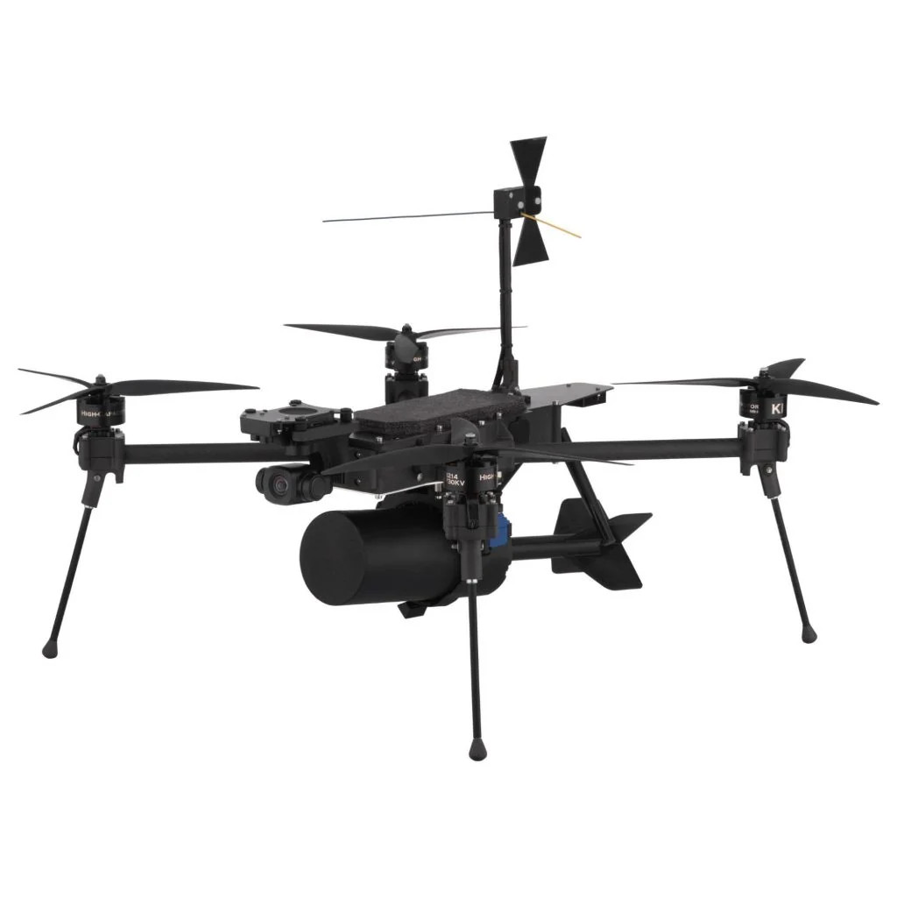
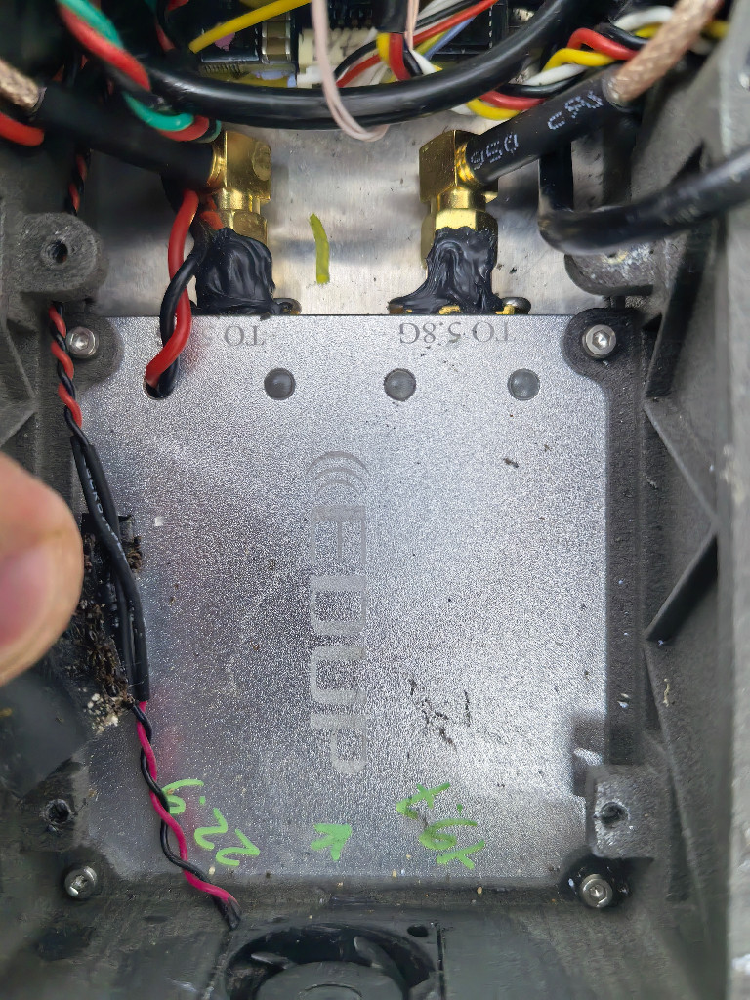
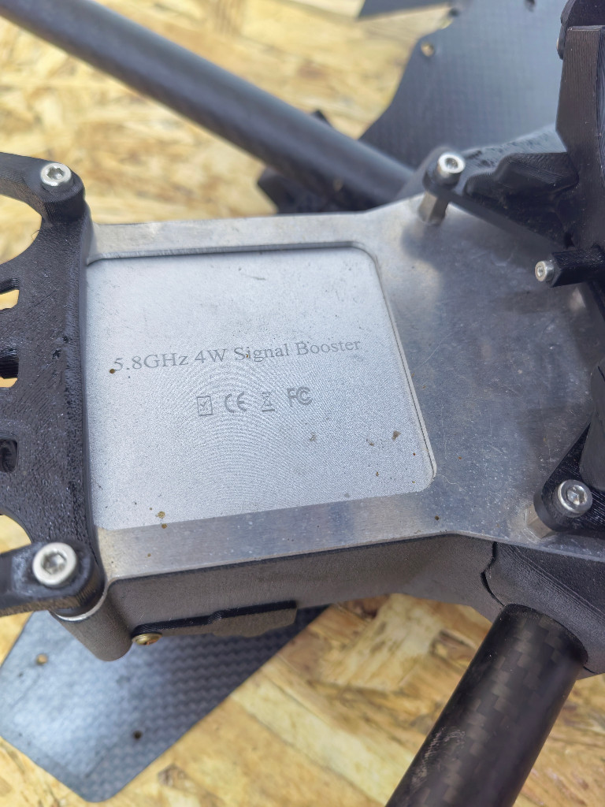
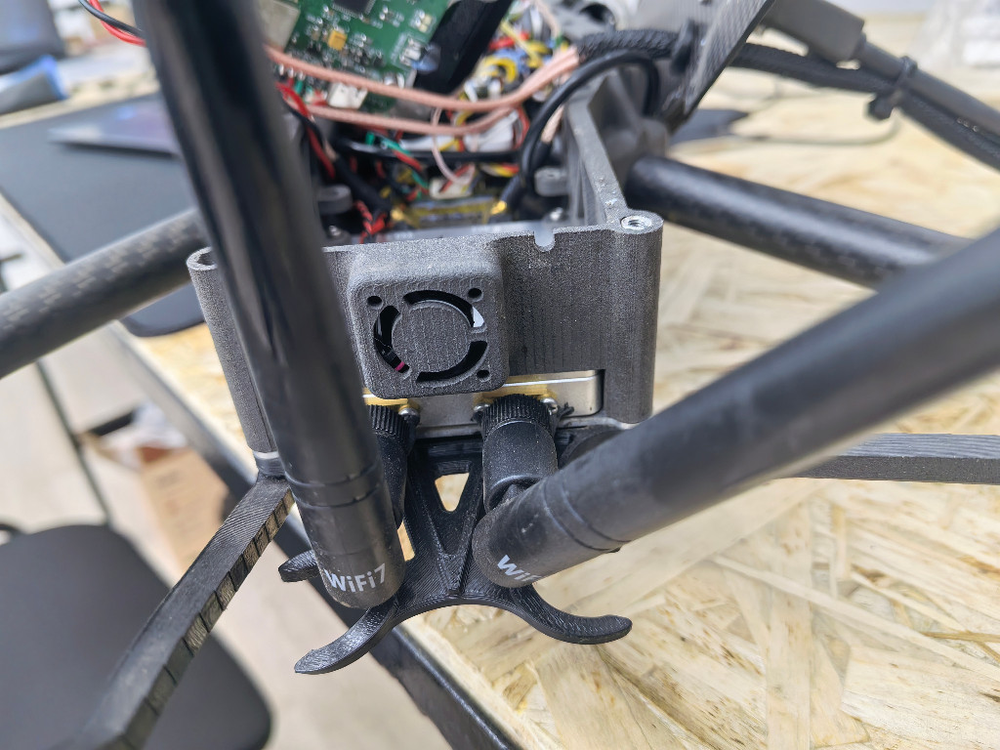
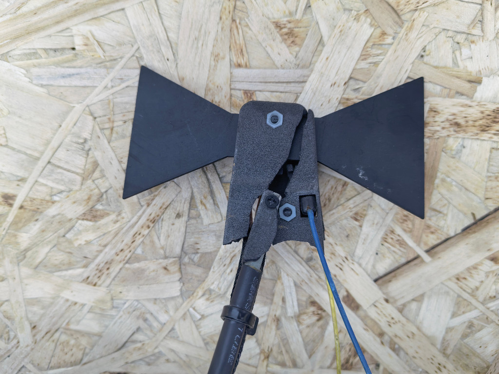
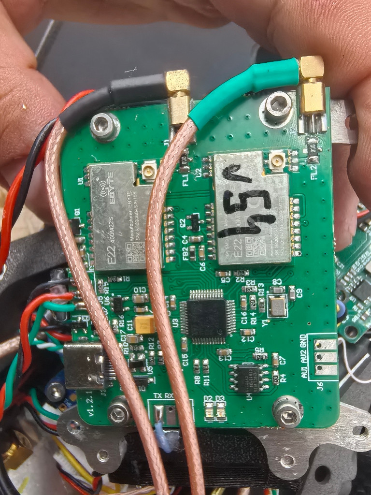

Снимки лежат рядом, в папке foto, в исходном числе пикселей. Откройте этот файл из распакованной папки, не с сайта GitHub: тогда браузер покажет резкие кадры.
Прошивка ArduCopter V4.5.7 (2a3dc4b7). Режим полёта AltHold. В воздухе 14 мин 41 с, высота до 159 м. Один сброс на 7:38.

Общий вид · 1024 × 1024 пикселей. Спереди камера на подвесе, снизу цилиндр на замке сброса, сверху мачта с антенной управления.

EDUP · 768 × 1024 пикселей. Блок EDUP. Маркировка EDUP, у разъёмов пометка TO 5.8G. Зелёным от руки написано 22.9 и 24.6.

5.8GHz 4W Signal Booster · 768 × 1024 пикселей. Усилитель канала изображения. На табличке надпись 5.8GHz 4W Signal Booster.

WiFi7 · 1024 × 768 пикселей. Антенны канала 5,8 ГГц. На корпусах маркировка WiFi7.

Антенна управления · 1024 × 768 пикселей. Антенна управления: два широких треугольника на мачте.

Ebyte E22-400M22S · 768 × 1024 пикселей. Плата управления. Два модуля Ebyte E22-400M22S, диапазон 410–493 МГц.